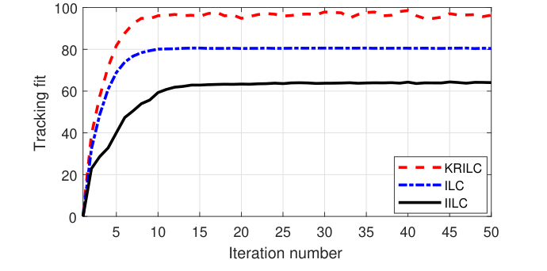
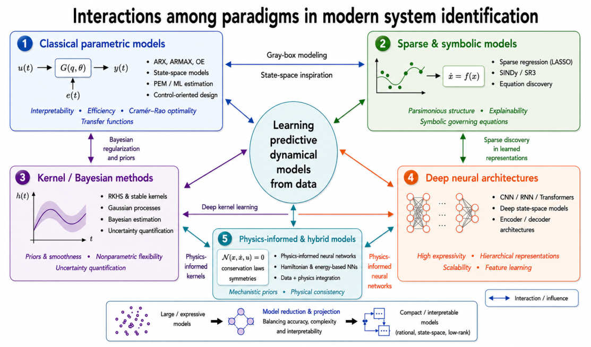
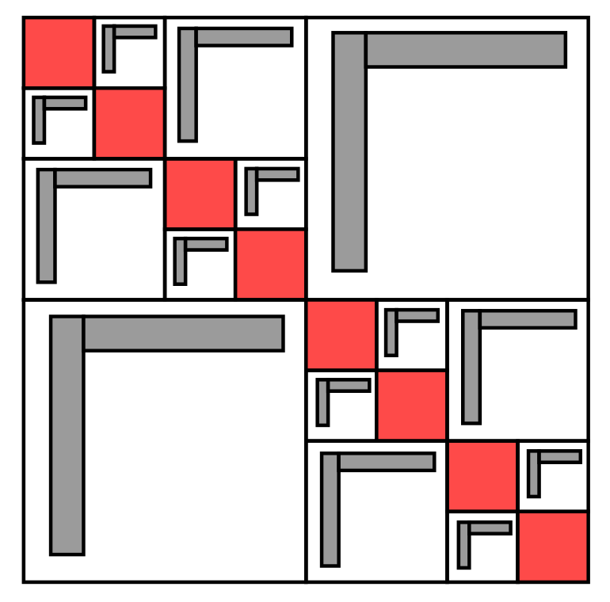
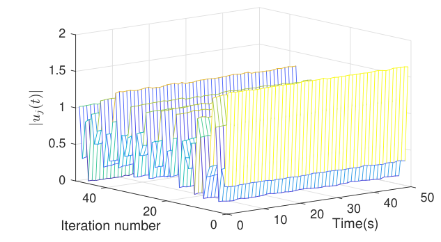

Research
Data-driven modeling

Kernel methods in reproducing kernel Hilbert spaces, regularized system identification, Bayesian inference, and deep learning.
Data-driven control and decision-making

Data-driven model predictive control, stochastic adaptive control, iterative learning control, online decision-making, and reinforcement learning.
Physics-informed modeling

Physics-informed kernel methods, Gaussian process regression, Bayesian manifold regularization, deep learning, and sparsity-promoting methods.
Statistical theory

Asymptotic, non-asymptotic, and high-dimensional theory for data-driven and physics-informed modeling, control, and decision-making.
Algorithms exploiting rank-structured matrices

Efficient computation for data-driven and physics-informed modeling, control, and decision-making with semiseparable, hierarchical off-diagonal low-rank (HODLR), hierarchical semiseparable (HSS), and sequentially semiseparable (SSS) matrices.
High-performance control

Applications in robotic control, motion control, and process control.
Spatiotemporal data modeling

Modeling large datasets that vary across space and time.